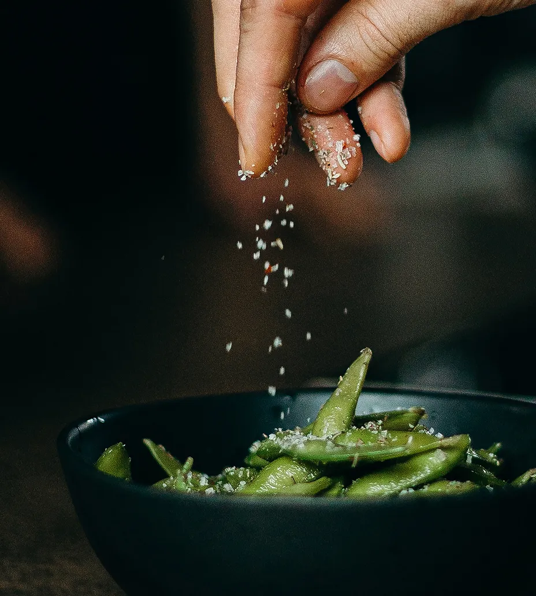
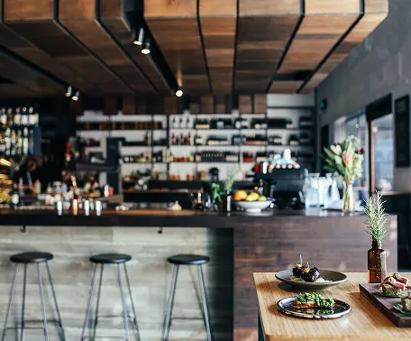

About
Sushi Artistry Redefined
Where culinary craftsmanship meets modern elegance. Indulge in the finest sushi, expertly curated to elevate your dining experience.

Trip Advisor
Best Steak House
Prague
Michelin Guide
Best Steak House
Prague
Star Dining
Best Steak House
Prague
Our Story
Founded with a passion for culinary excellence, Qitchen's journey began in the heart of Prague. Over years, it evolved into a haven for sushi enthusiasts, celebrated for its artful mastery and devotion to redefining gastronomy.